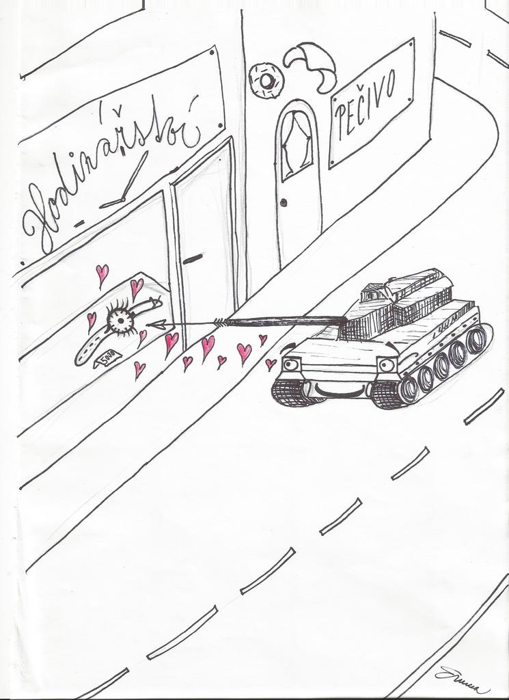

« předchozí článek | obsah čísla | následující článek »
Jednu věc si ale uvědom: Ďasa si nevymejšlí pánbu. Čert se dycky rodí z lidského hříchu, i když se ho lidi snažej zapudit. Jeden knihou, jinej ohněm, další eště něčím jiným... No a když ho konečně zažehnaj, a že se s tím nějak nějak natrápěj, tak skrze to svý trápení zploděj dalšího čerta – a zase to všecko běží vod začátku pěkně dokola....
— S. Jaroslavcev: Ďábel mezi lidmi
Učitel je pro studentky alfa samec.
Až se budete někdy rozčilovat nad podobným článkem, buďte v pozoru. Je to tím, že ho napsal učitel. Stejně tak až vás budou plakáty po celém městě přesvědčovat, že všichni volí Taškára, vězte, že byl Taškár zamlada, předtím než se dal na politiku, malíř, a všechny ty kreativce tak proto učili jeho spolužáci. A pak vás nemusí překvapit, že Kozák vyhrává průzkumy veřejného mínění. Studoval sociologii a absolventi sociologie, právě ti ty průzkumy dělají.
Umělci dostávají místa v reklamě a sociologové falšují průzkumy trhu. Kam ten svět spěje?
Stejně tak není důvod, proč důvěřovat městské lince vlaku. Vede ve směru, kam by normální člověk vlak nikdy neposlal. Proto většinou slouží train abusingu (nehodlám tu teď vysvětlovat, co to je, sám to totiž často provozuju) a převozu podivných existencí z Jižního nádraží na Východní a zpět.
Markéta seděla a učila se na zkoušku z biologie o nějakých absurdních breberkách žijících ve slaném nálevu v továrně na kyselé okurky. Na Jižním nádraží přistoupili dva starší pánové, asi měli trochu upito. Ale to nebylo nezvyklé, tímhle posledním vlakem nikdo střízlivý nejezdí.
„Večer si doma dám,“ začal jeden. „Jak se tomu říká? Babička to dávala mě malýmu – takový kořínek je to....“ – Druhý vzpomínal: „Jo nedávno jsem si z toho dělal čaj...“ – „Jak vono to jen....“
„Zázvor“ řekla do ticha Markéta. Kyselých okurek měla už po krk.
„To je ale chytré děvče,“ pochválil ji jeden, „zázvor je to.“ – „Ano. Ona je budoucnost tohoto města, my už jsme udělali dost,“ přizvukoval druhý.
Dvořit se uměli asi jako bojové vozidlo pěchoty náramkovým hodinkám a nejhorší na tom bylo to, že už ji dneska s tím, že jí to sluší, zastavoval pro změnu bezdomovec (jménem Leopold, který teď seděl na Jižním nádraží a kouřil cigarety značky Drina, které vyžebral od jednoho Jugoslávce).
„Když mi bylo dvacet, jezdila touhle tratí jedna moc pěkná průvodčí,“ mlel si svoji písničku první.
Markéta vzhlédla od nálevníků ve svých skriptech. Odkud jen ty dva dědky znala?
Vlak projel okolo domu, kde byl plakát jednoho z nich v nadlidské velikosti.
No jistě! To jsou kandidáti na starostu! Už 14 dní tu bojujou o hlasy lidí jak dva rozzuření nosorožčí samci a teď je vidím vedle sebe družně hovořící ve vlaku. No potěš koště!
Vlak vjel na most.
„Věřím jen těm statistikám, které jsem si sám zfalšoval, jak říkaval Churchill…“ poučoval druhý. „A nebo to říkal Goebbels? No, to je jedno, na tom nesejde. Každopádně si myslím, že máš tohle období výhru skoro v kapse. Z demografického hlediska jsi zacílil na generaci babyboomu…“
Markéta vzhlédla od nálevníků. Kozák a Taškár, ale který je který? Navíc mají prohozené insignie: Ten s odznáčkem má na klopě obličej toho druhého, toho co něco zkoumá v brožuře „Společně za město“ (neveděla, že to, co ho zaujalo, byla jedna hezká fanynka té strany, ve skutečnosti začínající irská herečka). Oba politikové se tvářili nadmíru spokojeně. Ta noc byla jejich. Sčítání hlasů začalo. Vlak vjel do tunelu.
Ona taková okresní politika, když na to přijde, je leckdy drsnější než politika mezinárodní.
Bezdomovec Leopold dokouřil poslední Drinu. Nechápal, proč se kolem těch posledních voleb strhl takový povyk. Co on pamatoval, byli na radnici oba už několikrát. Nic se za tu dobu nezměnilo, akorát se postavil silniční obchvat a jedna tramvajová trať. Ani jeden z kandidátů se ve svém programu o bezdomovcích nezmínil. Dokonce je ani nechtěl vyhnat z centra, jak bývalo při minulých volbách zvykem.
Jak tak filozofoval, objevila se stará pomalá postava. Sekuriťák. „Musíte odejít,“ řekl klidně. – „Ale kam?“ položil Leopold řečnickou. – „To nevím, třeba na radnici, ale musíte odejít.“
Leopold vstal a v doprovodu sekuriťáka vyšel z nádraží. Sotva vyšli, dveře nádraží se zavřely a celá ta budova zajela za tichého hučení kamsi pod zem. „Generální úklid,“ vysvětlil sekuriťák.
Markéta šplhala po schodech domů. Celý život bydlela na kopci nad městem, kde příšerně foukal vítr a bylo tam vždy o deset stupňů míň než v jakékoliv jiné části města, počítaje v to i akciové mrazírny. A uprostřed schodů, kudy chodila domů, stála na kamenném soklu obrovská prázdná bronzová mísa. Už od dětství měla Markéta jasno v jejím účelu: Určitě slouží k obětování lidí.
Nicméně až do onoho předvolebního večera nikdy nebyla svědkem nějakého krvavého obřadu. Až dnes – nějaká okabátovaná postava tu v míse cosi pálila a zapíjela to nějakým držkopalem. Markéta dostala strach. To poslední, co potřebovala, bylo střetnout se s nějakým šíleným satanistou či co. Věděla totiž, že právě ONA je typ vhodný pro zápalnou obět.
S ohněm v očích stoupala dál, ale ta postava jí byla čím dál znamější. Byl to jejich profesor praktické filozofie!
On to byl teda divný patron. To jo. Divný dokonce i na poměry filozofické fakulty. Ale tohle?
„Dobrý den!“ pozdravila ho schválně dost nahlas. Vzhlédl od bronzové mísy: „Dobrý večer, Markéto, co tady děláte?“ – „Na to samý jsem se chtěla zeptat já vás. Já tu totiž bydlím.“ – Nadychl se, položil poloprázdnou láhev Zázvorovice na zem vedle mísy a podíval se na Markétu: „Dělám takový malý obřad na ozdravení demokracie.“ – Skoro vyprskla smíchy: „Prosím!?“ – „No prostě pálim nepoužité volební lístky za tichého zpěvu Finských metalových balad…“ Na tváři Markéty se začal rýsovat jakýsi neurčitý škleb, tak spěšně dodal: „Je to taková moje tradice, dělám to každé volby.“ – „Tak doufám, že se vám tu demokracii podaří ozdravit.“ Řekla s trochou ironie v hlase. „Viděla jsem před chvílí Kozáka s Taškárem, jak se spolu družně baví.“ – „To jste nevěděla?“ zeptal se jí překvapeně.
Ne, nevěděla to. O politiku se nezajímala a to málo, co se dozvěděla, jí vždy stačilo utvrdit v jejím nezájmu. Netušila, že se znají už z dob před svým politickým působením. Netušila, že mezi jejich stranami se vede už témeř sto let taková místní studená válka. Nesnáší se, ale potřebují se. Jedna strana si nemůže dovolit druhou zlikvidovat, protože by se pak neměla vůči čemu vymezit.
Rozloučila se s filozofem a pokračovala domů. Bydlet sám má své nepochybné nevýhody a pochybné výhody. A naopak. To, že mohla ve dvě v noci v klidu šramotit (ale i rachotit a rámusit) po bytě, byla ta pochybná výhoda. To, že všechny talíře, co ráno nechala nemyté v kuchyni, stále leží tam, kde je položila, byla ta nepochybná nevýhoda. Byla však příliš ospalá na to, aby s nimi něco udělala.
Už stála v koupelně v županu a čistila si zuby, když si na něco vzpomněla. Volební lístky!
V zásuvce psacího stolu ležela ještě neotevřená sada volebních lístků. Markéta nezvolila2.
Jedním z důvodů byl mizerný výběr. Z kandidátů připadala v úvahu asi jen matka její spolužačky Valérie, samotná Valérie se však na možnost, že by se přes noc stala dcerou starostky, dívala docela kriticky. Kromě toho Markéta neměla čas. Všechny ty výstavy, zkoušky, včerejší koncert Obwodu LRC…
Otevřela zásuvku a vzala lístky. Přemýšlela, zda to stojí za to chodit ven, a nakonec se rozhodla, že jo. Oblékla si mikinu a tepláky, na šaty, ve kterých přišla, už byla venku moc zima.
Oheň dohoříval. Filozof seděl na okraji mísy a zamyšleně pozoroval v ohni zániku se kroutící lístky. – „Pane profesore,“ oslovila ho, „něco jsem vám přinesla.“ A nabídla mu obálku s lístky. – „Děkuju vám.“ Přijal lístky a na znamení vděčnosti udělal lehce komickou poklonu. Roztrhl obálku a rozházel její obsah do dohořívajícího ohně.
Dobrovská, Kozák, Taškár, Flink… Jména se kroutila a měnila v prach. Markéta koukala do ohně a přemýšlela, zda to není škoda. Zda to není škoda papíru nebo jejího hlasu. Přeci jen se stala součástí zápalné oběti!
Přisedla si na mísu a zadívala se do ohně. Filozof se pomalu zvedl. Zřejmě mu nepřipadalo vhodné sedět na jedné míse společně se svou studentkou. Nehleděl na to, že ta mísa má tři metry v průměru.
„Markéto, víte proč se pořádají volby?“ – „Ne,“ odpověděla prostě. Na noční diskuzi spojenou s citováním Nietzscheho a Platóna neměla ani čas ani chuť ani náladu. – „Z toho samého důvodu, jako se ve starém Římě pořádaly kalendy. Lidé musí na pár dní získat pocit, že je vše dovoleno. Že si o svém životě rozhodují sami, a považte to – dokonce, že si vládnou sami!“ Filozof domluvil. Dole v údolí projel po železničním mostě nákladní vlak. Markéta mlčela.
„Hmmm. A po volbách…“ Pokračoval filozof a vzal jeden z volebních lístků z mísy. Lístek se mu tím zvednutím v ruce dočista rozsypal na popel. „A po volbách se tahle iluze rozsype. Skutečné moci se opět chopí nikým nevolené šedé eminence a další čtyři roky novodobého otroctví se rozjedou nanovo.“ Vlak v údolí vyjel z tunelu a plazil se jako železný had mezi odstavenými vagóny na Východním nádraží.
Markéta vzala láhev Zázvorovice stojící u paty mísy a ochutnala. Otřásla se jako pes. Zázvorovice bylo vůbec to nejšílenější, co kdy pila. Nad parkem, kde stáli, projel taxík.
„Jak můžete s takovýmhle názorem každé ráno vstát, jít do školy a tam vyučovat?“ zeptala se ho a položila lahev Zázvorovice na okraj mísy. Filozof lovil v hlavě jakýsi Nietzscheho citát, ale než ho stačil vyslovit, Markéta zmizela za teréním zlomem v přízemní chodbě činžáku.
Ámen
Dvořit se uměli asi jako bojové vozidlo pěchoty náramkovým hodinkám.
« předchozí článek | obsah čísla | následující článek »
[2] : A tady je dobré připomenout, že v Hlubočici mají místní (obecní) úřady o dost silnější pravomoci než v Čechách. Jedním z důsledků je i přímá volba starosty. ↩